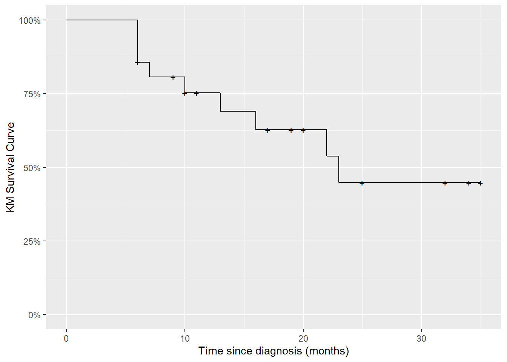
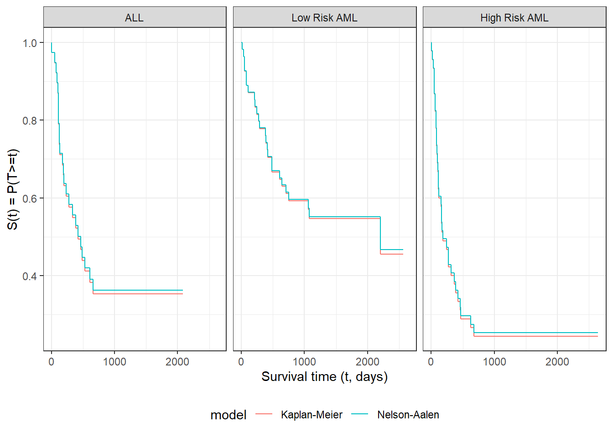

rm(list =ls())# delete any data that's already loaded into Rknitr::opts_chunk$set(message =FALSE)pander::panderOptions("table.emphasize.rownames", FALSE)pander::panderOptions("table.split.table", Inf)conflicts_prefer(dplyr::filter)# use the `filter()` function from dplyr() by defaultoptions('digits'=4)
5.1 Time-to-event outcome distributions
5.1.1 Time to Event Data
Survival Analysis is a term for analyzing time-to-event data.
This is used in clinical trials, where the event is often death or recurrence of disease.
It is used in engineering reliability analysis, where the event is failure of a device or system.
It is used in insurance, particularly life insurance, where the event is death.
5.1.2 Distributions of Time-to-Event Data
The distribution of event times is asymmetric and can be long-tailed, and starts at 0 (that is, \(P(T<0) = 0\)).
The base distribution is not normal, but exponential.
There are usually censored observations, which are ones in which the failure time is not observed.
Often, these are right-censored, meaning that we know that the event occurred after some known time \(t\), but we don’t know the actual event time, as when a patient is still alive at the end of the study.
Observations can also be left-censored, meaning we know the event has already happened at time \(t\), or interval-censored, meaning that we only know that the event happened between times \(t_1\) and \(t_2\).
Analysis is difficult if censoring is associated with treatment.
5.1.3 Right Censoring
Patients are in a clinical trial for cancer, some on a new treatment and some on standard of care.
Some patients in each group have died by the end of the study. We know the survival time (measured for example from time of diagnosis—each person on their own clock).
Patients still alive at the end of the study are right censored.
Patients who are lost to follow-up or withdraw from the study may be right-censored.
5.1.4 Left and Interval Censoring
An individual tests positive for HIV.
If the event is infection with HIV, then we only know that it has occurred before the testing time \(t\), so this is left censored.
If an individual has a negative HIV test at time \(t_1\) and a positive HIV test at time \(t_2\), then the infection event is interval censored.
5.1.5 Distribution functions for time-to-event variables
The Probability Density Function (PDF)
For a time-to-event variable \(T\) with a continuous distribution, the probability density function is defined as usual:
Typically, this density is assumed to be 0 for all \(t<0\); that is, \(f(t) = 0, \forall t<0\). In other words, the range of \(T\) is typically \([0,\infty)\).
Example: exponential distribution
Recall from Epi 202: the pdf of the exponential distribution family of models is:
The survival function \(S(t)\) is the probability that the event time is later than \(t\). If the event in a clinical trial is death, then this is the expected fraction of the original population at time 0 that is still alive at time \(t\); that is, the fraction surviving to time \(t\).
Example: exponential distribution
Since \(S(t) = 1 - F(t)\), the survival function of the exponential distribution family of models is:
Another important quantity is the hazard function, which represents the probability that the event will occur at time \(t\), given that it has not occurred yet:
\[h(t) \stackrel{\text{def}}{=}p(T=t|T\ge t)\]
Note
Recall from Epi 202: if \(A\subseteq B\) then \(p(A \cap B) = p(A)\).
As we will see below, \(H(t)\) is tractable to estimate, and we can then derive an estimate the hazard function using an approximate derivative of the estimated cumulative hazard.
Example: exponential distribution
The cumulative hazard function of the exponential distribution family of models is:
\[
H(t) = \mathbb{1}_{t \ge 0}\cdot \lambda t
\]
Here are some examples of exponential cumulative hazard functions:
Some Key Mathematical Relationships among Survival Concepts
If instead the event time \(T\) is censored and only known to be after time \(y\), then the likelihood of that censored observation is instead the survival function evaluated at the censoring time:
What’s written above is incomplete. We also observed whether or not the observation was censored. Let \(C\) denote the time when censoring would occur (if the event did not occur first); let \(f_C(y)\) and \(S_C(y)\) be the corresponding density and survival functions for the censoring event.
Let \(Y\) denote the time when observation ended (either by censoring or by the event of interest occurring), and let \(D\) be an indicator variable for the event occurring at \(Y\) (so \(D=0\) represents a censored observation and \(D=1\) represents an uncensored observation). In other words, let \(Y \stackrel{\text{def}}{=}\min(T,C)\) and \(D \stackrel{\text{def}}{=}\mathbb 1{\{T<=C\}}\).
Then the complete likelihood of the observed data \((Y,D)\) is:
As long as \(\theta_C\) and \(\theta_T\) don’t share any parameters, then if censoring is non-informative, the partial derivative with respect to \(\theta_T\) is:
\[
\begin{aligned}
\ell'_{\theta_T}(y,d)
&\stackrel{\text{def}}{=}\frac{d}{d\theta_T}\ell(y,d)\\
&=
\left(
\frac{d}{d\theta_T}
\text{log}\left\{
f_T(y)^d \cdot S_T(y)^{1-d}
\right\}
\right)
+
\left(
\frac{d}{d\theta_T}
\text{log}\left\{
f_C(y)^{1-d} \cdot S_C(y)^{d}
\right\}
\right)\\
&=
\left(
\frac{d}{d\theta_T}
\text{log}\left\{
f_T(y)^d \cdot S_T(y)^{1-d}
\right\}
\right) + 0\\
&=
\frac{d}{d\theta_T}
\text{log}\left\{
f_T(y)^d \cdot S_T(y)^{1-d}
\right\}\\
\end{aligned}
\] Thus, the MLE for \(\theta_T\) won’t depend on \(\theta_C\), and we can ignore the distribution of \(C\) when estimating the parameters of \(f_T(t)=p(T=t)\).
That is, if the event occurred at time \(y\) (i.e., if \(d=1\)), then the likelihood of \((Y,D) = (y,d)\) is equal to the hazard function at \(y\) times the survival function at \(y\). Otherwise, the likelihood is equal to just the survival function at \(y\).
In other words, the log-likelihood contribution from a single observation \((Y,D) = (y,d)\) is equal to the negative cumulative hazard at \(y\), plus the log of the hazard at \(y\) if the event occurred at time \(y\).
Note
End of extra section.
5.2 Parametric Models for Time-to-Event Outcomes
5.2.1 Exponential Distribution
The exponential distribution is the base distribution for survival analysis.
The distribution has a constant hazard \(\lambda\)
Suppose we have \(m\) exponential survival times of \(t_1, t_2,\ldots,t_m\) and \(k\) right-censored values at \(u_1,u_2,\ldots,u_k\).
A survival time of \(t_i=10\) means that subject \(i\) died at time 10. A right-censored time \(u_i=10\) means that at time 10, subject \(i\) was still alive and that we have no further follow-up.
For the moment we will assume that the survival distribution is exponential and that all the subjects have the same parameter \(\lambda\).
We have \(m\) exponential survival times of \(t_1, t_2,\ldots,t_m\) and \(k\) right-censored values at \(u_1,u_2,\ldots,u_k\). The log-likelihood of an observed survival time \(t_i\) is \[
\text{log}\left\{\lambda \text{e}^{-\lambda t_i}\right\} =
\text{log}\left\{\lambda\right\}-\lambda t_i
\] and the likelihood of a censored value is the probability of that outcome (survival greater than \(u_j\)) so the log-likelihood is \[
\text{log}\left\{\lambda \text{e}^{u_j}\right\} =-\lambda u_j.
\]
\(\hat\lambda\) depends on the censoring times of the censored observations, but \(\text{Var}\left(\hat\lambda\right)\) only depends on the number of uncensored observations, \(m\), and not on the number of censored observations (\(k\)).
Other Parametric Survival Distributions
Any density on \([0,\infty)\) can be a survival distribution, but the most useful ones are all skew right.
The commonest generalization of the exponential is the Weibull.
Other common choices are the gamma, log-normal, log-logistic, Gompertz, inverse Gaussian, and Pareto.
Most of what we do going forward is non-parametric or semi-parametric, but sometimes these parametric distributions provide a useful approach.
When \(\alpha=1\) this is the exponential. When \(\alpha>1\) the hazard is increasing and when \(\alpha < 1\) the hazard is decreasing. This provides more flexibility than the exponential.
We will see more of this distribution later.
5.3 Nonparametric Survival Analysis
5.3.1 Basic ideas
Mostly, we work without a parametric model.
The first task is to estimate a survival function from data listing survival times, and censoring times for censored data.
For example one patient may have relapsed at 10 months. Another might have been followed for 32 months without a relapse having occurred (censored).
The minimum information we need for each patient is a time and a censoring variable which is 1 if the event occurred at the indicated time and 0 if this is a censoring time.
5.4 Example: clinical trial for pediatric acute leukemia
5.4.1 Overview of study
This is from a clinical trial in 1963 for 6-MP treatment vs. placebo for Acute Leukemia in 42 children.
Pairs of children:
matched by remission status at the time of treatment (remstat: 1 = partial, 2 = complete)
randomized to 6-MP (exit times in t2) or placebo (exit times in t1)
Followed until relapse or end of study.
All of the placebo group relapsed, but some of the 6-MP group were censored (which means they were still in remission); indicated by relapse variable (0 = censored, 1 = relapse).
6-MP = 6-Mercaptopurine (Purinethol) is an anti-cancer (“antineoplastic” or “cytotoxic”) chemotherapy drug used currently for Acute lymphoblastic leukemia (ALL). It is classified as an antimetabolite.
5.4.2 Study design
Clinical trial in 1963 for 6-MP treatment vs. placebo for Acute Leukemia in 42 children. Pairs of children matched by remission status at the time of treatment (1 = partial or 2 = complete) and randomized to 6-MP or placebo. Followed until relapse or end of study. All of the placebo group relapsed, but some of the 6-MP group were censored.
library(printr)# inserts help-file output into markdown outputlibrary(KMsurv)?drug6mp
drug6mp
R Documentation
data from Section 1.2
Description
The drug6mp data frame has 21 rows and 5 columns.
Format
This data frame contains the following columns:
pair
pair number
remstat
Remission status at randomization (1=partial, 2=complete)
t1
Time to relapse for placebo patients, months
t2
Time to relapse for 6-MP patients, months
relapse
Relapse indicator (0=censored, 1=relapse) for 6-MP patients
5.4.4 Descriptive Statistics
The average time in each group is not useful. Some of the 6-MP patients have not relapsed at the time recorded, while all of the placebo patients have relapsed.
The median time is not really useful either because so many of the 6-MP patients have not relapsed (12/21).
Both are biased down in the 6-MP group. Remember that lower times are worse since they indicate sooner recurrence.
We can compute the average hazard rate, which is the estimate of the exponential parameter: number of relapses divided by the sum of the times.
For the placebo, that is just the reciprocal of the mean time = 1/8.667 = 0.115.
For the 6-MP group this is 9/359 = 0.025
The estimated average hazard in the placebo group is 4.6 times as large (if the hazard is constant over time).
5.5 The Kaplan-Meier Product Limit Estimator
The estimated survival function for the placebo patients is easy to compute. For any time \(t\) in months, \(S(t)\) is the fraction of patients with times greater than \(t\).
For the 6-MP patients, we cannot ignore the censored data because we know that the time to relapse is greater than the censoring time.
For any time \(t\) in months, we know that 6-MP patients with times greater than \(t\) have not relapsed, and those with relapse time less than \(t\) have relapsed, but we don’t know if patients with censored time less than \(t\) have relapsed or not.
The procedure we usually use is the Kaplan-Meier product-limit estimator of the survival function.
The Kaplan-Meier estimator is a step function (like the empirical cdf), which changes value only at the event times, not at the censoring times.
At each event time \(t\), we compute the at-risk group size \(Y\), which is all those observations whose event time or censoring time is at least \(t\).
If \(d\) of the observations have an event time (not a censoring time) of \(t\), then the group of survivors immediately following time \(t\) is reduced by the fraction \[\frac{Y-d}{Y}=1-\frac{d}{Y}\]
If the event times are \(t_i\) with events per time of \(d_i\) (\(1\le i \le k\)), then \[\hat S(t) = \prod_{t_i < t}[1-d_i/Y_i]\] where \(Y_i\) is the set of observations whose time (event or censored) is \(\ge t_i\), the group at risk at time \(t_i\).
If there are no censored data, and there are \(n\) data points, then just after (say) the third event time \[
\begin{aligned}
\hat S(t)
&= \prod_{t_i < t}[1-d_i/Y_i]\\
&=[\frac{n-d_1}{n}][\frac{n-d_1-d_2}{n-d_1}][\frac{n-d_1-d_2-d_3}{n-d_1-d_2}]\\
&=\frac{n-d_1-d_2-d_3}{n}\\
&=1-\frac{d_1+d_2+d_3}{n}\\
&=1-\hat F(t)\\
\end{aligned}
\]
where \(\hat F(t)\) is the usual empirical CDF estimate.
5.5.1 Kaplan-Meier curve for drug6mp data
Here is the Kaplan-Meier estimated survival curve for the patients who received 6-MP in the drug6mp dataset (we will see code to produce figures like this one shortly):
Kaplan-Meier Survival Curve for 6-MP Patients

5.5.2 Kaplan-Meier calculations
Let’s compute these estimates and build the chart by hand:
Code
library(KMsurv)library(dplyr)data(drug6mp)drug6mp.v2=drug6mp|>as_tibble()|>mutate( remstat =remstat|>case_match(1~"partial",2~"complete"),# renaming to "outcome" while relabeling is just a style choice: outcome =relapse|>case_match(0~"censored",1~"relapsed"))km.6mp=drug6mp.v2|>summarize( .by =t2, Relapses =sum(outcome=="relapsed"), Censored =sum(outcome=="censored"))|># here we add a start time row, so the graph starts at time 0:bind_rows(tibble( t2 =0, Relapses =0, Censored =0))|># sort in time order:arrange(t2)|>mutate( Exiting =Relapses+Censored, `Study Size` =sum(Exiting), Exited =cumsum(Exiting)|>dplyr::lag(default =0), `At Risk` =`Study Size`-Exited, Hazard =Relapses/`At Risk`, `KM Factor` =1-Hazard, `Cumulative Hazard` =cumsum(`Hazard`), `KM Survival Curve` =cumprod(`KM Factor`))library(pander)pander(km.6mp)
Table continues below
t2
Relapses
Censored
Exiting
Study Size
Exited
At Risk
Hazard
0
0
0
0
21
0
21
0
6
3
1
4
21
0
21
0.1429
7
1
0
1
21
4
17
0.05882
9
0
1
1
21
5
16
0
10
1
1
2
21
6
15
0.06667
11
0
1
1
21
8
13
0
13
1
0
1
21
9
12
0.08333
16
1
0
1
21
10
11
0.09091
17
0
1
1
21
11
10
0
19
0
1
1
21
12
9
0
20
0
1
1
21
13
8
0
22
1
0
1
21
14
7
0.1429
23
1
0
1
21
15
6
0.1667
25
0
1
1
21
16
5
0
32
0
2
2
21
17
4
0
34
0
1
1
21
19
2
0
35
0
1
1
21
20
1
0
KM Factor
Cumulative Hazard
KM Survival Curve
1
0
1
0.8571
0.1429
0.8571
0.9412
0.2017
0.8067
1
0.2017
0.8067
0.9333
0.2683
0.7529
1
0.2683
0.7529
0.9167
0.3517
0.6902
0.9091
0.4426
0.6275
1
0.4426
0.6275
1
0.4426
0.6275
1
0.4426
0.6275
0.8571
0.5854
0.5378
0.8333
0.7521
0.4482
1
0.7521
0.4482
1
0.7521
0.4482
1
0.7521
0.4482
1
0.7521
0.4482
Summary
For the 6-MP patients at time 6 months, there are 21 patients at risk. At \(t=6\) there are 3 relapses and 1 censored observations.
The Kaplan-Meier factor is \((21-3)/21 = 0.857\). The number at risk for the next time (\(t=7\)) is \(21-3-1=17\).
At time 7 months, there are 17 patients at risk. At \(t=7\) there is 1 relapse and 0 censored observations. The Kaplan-Meier factor is \((17-1)/17 = 0.941\). The Kaplan Meier estimate is \(0.857\times0.941=0.807\). The number at risk for the next time (\(t=9\)) is \(17-1=16\).
Now, let’s graph this estimated survival curve using ggplot():
We don’t have to do these calculations by hand every time; the survival package and several others have functions available to automate many of these tasks (full list: https://cran.r-project.org/web/views/Survival.html).
5.6.1 The Surv function
To use the survival package, the first step is telling R how to combine the exit time and exit reason (censoring versus event) columns. The Surv() function accomplishes this task.
Returns a list containing the survival curve, confidence limits for the curve, and other information.
5.7.2 Usage
## S3 method for class 'survfit'summary(object, times, censored=FALSE, scale=1,extend=FALSE, rmean=getOption('survfit.rmean'), ...)
5.7.3 Arguments
object
the result of a call to the survfit function.
times
vector of times; the returned matrix will contain 1 row for each time. The vector will be sorted into increasing order; missing values are not allowed. If censored=T, the default times vector contains all the unique times in fit, otherwise the default times vector uses only the event (death) times.
censored
logical value: should the censoring times be included in the output? This is ignored if the times argument is present.
scale
numeric value to rescale the survival time, e.g., if the input data to survfit were in days, scale = 365.25 would scale the output to years.
extend
logical value: if TRUE, prints information for all specified times, even if there are no subjects left at the end of the specified times. This is only used if the times argument is present.
rmean
Show restricted mean: see print.survfit for details
...
for future methods
5.7.4 Plotting estimated survival functions
We can plot survfit objects with plot(), autoplot(), or ggsurvplot():
Tests if there is a difference between two or more survival curves using
the G^\rho family of tests, or for a single curve against a known alternative.
Now we are going to compare the placebo and 6-MP data. We need to reshape the data to make it usable with the standard survival workflow:
Code
library(survival)drug6mp.v4=drug6mp.v3|>select(pair, remstat, t1, t2, outcome)|># here we are going to change the data from a wide format to long:pivot_longer( cols =c(t1, t2), names_to ="treatment", values_to ="exit_time")|>mutate( treatment =treatment|>case_match("t1"~"placebo","t2"~"6-MP"), outcome =if_else(treatment=="placebo","relapsed",outcome), surv =Surv( time =exit_time, event =(outcome=="relapsed")))
Using this long data format, we can fit a Kaplan-Meier curve for each treatment group simultaneously:
Code
drug6mp.km_model2=survfit( formula =surv~treatment, data =drug6mp.v4)
Hospital: 1-The Ohio State University, 2-Alferd , 3-St. Vincent, 4-Hahnemann
z10
MTX Used as a Graft-Versus-Host- Prophylactic: 1-Yes 0-No
Source
Klein and Moeschberger (1997) Survival Analysis Techniques for Censored
and truncated data, Springer.
Examples
data(bmt)
5.8.2 Analysis plan
We concentrate for now on disease-free survival (t2 and d3) for the three risk groups, ALL, AML Low Risk, and AML High Risk.
We will construct the Kaplan-Meier survival curves, compare them, and test for differences.
We will construct the cumulative hazard curves and compare them.
We will estimate the hazard functions, interpret, and compare them.
5.8.3 Survival Function Estimate and Variance
\[\hat S(t) = \prod_{t_i < t}\left[1-\frac{d_i}{Y_i}\right]\] where \(Y_i\) is the group at risk at time \(t_i\).
The estimated variance of \(\hat S(t)\) is (Greenwood’s formula) \[\hat{\text{Var}}\left(\hat S (t)\right) = \hat S(t)^2\sum_{t_i <t}\frac{d_i}{Y_i(Y_i-d_i)}\] which we can use for confidence intervals for a survival function or a difference of survival functions.
To see where Greenwood’s formula comes from, let \(x_i=Y_i-d_i\). We approximate the solution treating each time as independent, with \(Y_i\) fixed and ignore randomness in times of failure and we treat \(x_i\) as independent binomials \(\text{Bin}(Y_i,p_i)\). Letting \(S(t)\) be the “true” survival function
The variance of this estimator is approximately: \[
\begin{aligned}
\hat{\text{Var}}\left(\hat H_{NA} (t)\right)
&= \sum_{t_i <t}\frac{(d_i/Y_i)(1-d_i/Y_i)}{Y_i}\\
&\approx \sum_{t_i <t}\frac{d_i}{Y_i^2}
\end{aligned}
\]
Since \(S(t)=\text{exp}\left\{-H(t)\right\}\), the Nelson-Aalen cumulative hazard estimate can be converted into an alternate estimate of the survival function:
The product limit estimate and the Nelson-Aalen estimate often do not differ by much. The latter is considered more accurate in small samples and also directly estimates the cumulative hazard. The "fleming-harrington" method for survfit() reduces to Nelson-Aalen when the data are unweighted. We can also estimate the cumulative hazard as the negative log of the KM survival function estimate.
5.9.1 Application to bmt dataset
Code
na_fit=survfit( formula =surv~group, type ="fleming-harrington", data =bmt)km_fit=survfit( formula =surv~group, type ="kaplan-meier", data =bmt)km_and_na=bind_rows( .id ="model","Kaplan-Meier"=km_fit|>fortify(surv.connect =TRUE),"Nelson-Aalen"=na_fit|>fortify(surv.connect =TRUE))|>as_tibble()
Kaplan-Meier and Nelson-Aalen Survival Function Estimates, stratified by disease group

The Kaplan-Meier and Nelson-Aalen survival estimates are very similar for this dataset.
Source Code
---title: "Introduction to Survival Analysis"date: last-modifieddate-format: "[Last modified:] YYYY-MM-DD: H:mm:ss (A)"subject: "EPI 204 Spring 2023"editor_options: chunk_output_type: consoleeditor: markdown: wrap: 72---{{< include shared-config.qmd >}}::: {.content-hidden when-format="revealjs"}## Configuring R {.unnumbered}Functions from these packages will be used throughout this document:```{r packages, message = FALSE}library(pander) # format tables for markdownlibrary(ggplot2) # graphicslibrary(ggeasy) # help with graphicslibrary(scales) # scales formattinglibrary(dplyr) # manipulate datalibrary(haven) # import Stata fileslibrary(knitr) # format R output for markdownlibrary(tidyr) # Tools to help to create tidy datalibrary(plotly) # interactive graphicslibrary(dobson) # datasets from Dobson and Barnett 2018library(parameters) # format model output tables for markdownlibrary(conflicted) # check for conflicting function definitions```Here are some R settings I use in this document:```{r options, message=FALSE}rm(list =ls()) # delete any data that's already loaded into Rknitr::opts_chunk$set(message =FALSE)pander::panderOptions("table.emphasize.rownames", FALSE)pander::panderOptions("table.split.table", Inf)conflicts_prefer(dplyr::filter) # use the `filter()` function from dplyr() by defaultoptions('digits'=4)```:::# Time-to-event outcome distributions## Time to Event Data- Survival Analysis is a term for analyzing time-to-event data.- This is used in clinical trials, where the event is often death or recurrence of disease.- It is used in engineering reliability analysis, where the event is failure of a device or system.- It is used in insurance, particularly life insurance, where the event is death.## Distributions of Time-to-Event Data- The distribution of event times is asymmetric and can be long-tailed, and starts at 0 (that is, $P(T<0) = 0$).- The base distribution is not normal, but exponential.- There are usually **censored** observations, which are ones in which the failure time is not observed.- Often, these are **right-censored**, meaning that we know that the event occurred after some known time $t$, but we don't know the actual event time, as when a patient is still alive at the end of the study.- Observations can also be **left-censored**, meaning we know the event has already happened at time $t$, or **interval-censored**, meaning that we only know that the event happened between times $t_1$ and $t_2$.- Analysis is difficult if censoring is associated with treatment.## Right Censoring- Patients are in a clinical trial for cancer, some on a new treatment and some on standard of care.- Some patients in each group have died by the end of the study. We know the survival time (measured for example from time of diagnosis---each person on their own clock).- Patients still alive at the end of the study are right censored.- Patients who are lost to follow-up or withdraw from the study may be right-censored.## Left and Interval Censoring- An individual tests positive for HIV.- If the event is infection with HIV, then we only know that it has occurred before the testing time $t$, so this is left censored.- If an individual has a negative HIV test at time $t_1$ and a positive HIV test at time $t_2$, then the infection event is interval censored.## Distribution functions for time-to-event variables### The Probability Density Function (PDF)For a time-to-event variable $T$ with a continuous distribution, the**probability density function** is defined as usual:$$f(t)\stackrel{\text{def}}{=}p(t) \stackrel{\text{def}}{=}p(T=t)$$Typically, this density is assumed to be 0 for all $t<0$; that is,$f(t) = 0, \forall t<0$. In other words, the range of $T$ is typically$[0,\infty)$.#### Example: exponential distributionRecall from Epi 202: the pdf of the exponential distribution family ofmodels is:$$p(T=t) = \mathbb{1}_{t \ge 0}\cdot \lambda \text{e}^{-\lambda t}$$ where $\lambda > 0$.Here are some examples of exponential pdfs:```{r, echo = FALSE}library(ggplot2)ggplot() +geom_function(aes(col ="0.5"),fun = \(x) dexp(x, rate =0.5)) +geom_function(aes(col ="p = 1"),fun = \(x) dexp(x, rate =1)) +geom_function(aes(col ="p = 1.5"),fun = \(x) dexp(x, rate =1.5)) +geom_function(aes(col ="p = 5"),fun = \(x) dexp(x, rate =5)) +theme_bw() +ylab("p(T=t)") +guides(col =guide_legend(title =expr(lambda))) +xlab("Time (t)") +xlim(0, 2.5) +theme(axis.title.x =element_text(angle =0, vjust =1, hjust =1),axis.title.y =element_text(angle =0, vjust =1, hjust =1))```### The Cumulative Distribution Function (CDF)The **cumulative distribution function** is defined as:$$\begin{aligned}F(t) &\stackrel{\text{def}}{=}\Pr(T \le t)\\&=\int_{u=0}^t f(u) du\end{aligned}$$#### Example: exponential distributionRecall from Epi 202: the cdf of the exponential distribution family ofmodels is:$$P(T\le t) = \mathbb{1}_{t \ge 0}\cdot(1- \text{e}^{-\lambda t})$$ where $\lambda > 0$.Here are some examples of exponential cdfs:```{r, echo = FALSE}library(ggplot2)ggplot() +geom_function(aes(col ="0.5"),fun = \(x) pexp(x, rate =0.5)) +geom_function(aes(col ="p = 1"),fun = \(x) pexp(x, rate =1)) +geom_function(aes(col ="p = 1.5"),fun = \(x) pexp(x, rate =1.5)) +geom_function(aes(col ="p = 5"),fun = \(x) pexp(x, rate =5)) +theme_bw() +ylab("p(T<=t)") +guides(col =guide_legend(title =expr(lambda))) +xlab("Time (t)") +xlim(0, 2.5) +theme(axis.title.x =element_text(angle =0, vjust =1, hjust =1),axis.title.y =element_text(angle =0, vjust =1, hjust =1))```### The Survival FunctionFor survival data, a more important quantity is the **survivalfunction**:$$\begin{aligned}S(t) &\stackrel{\text{def}}{=}\Pr(T > t)\\&=\int_{u=t}^\infty p(u) du\\&=1-F(t)\\\end{aligned}$$The survival function $S(t)$ is the probability that the event time islater than $t$. If the event in a clinical trial is death, then this isthe expected fraction of the original population at time 0 that is stillalive at time $t$; that is, the fraction surviving to time $t$.#### Example: exponential distributionSince $S(t) = 1 - F(t)$, the survival function of the exponentialdistribution family of models is:$$P(T> t) = \mathbb{1}_{t \ge 0} \cdot \text{e}^{-\lambda t}$$ where $\lambda > 0$.Here are some examples of exponential pdfs:```{r, echo = FALSE}library(ggplot2)ggplot() +geom_function(aes(col ="0.5"),fun = \(x) pexp(x, lower =FALSE, rate =0.5)) +geom_function(aes(col ="p = 1"),fun = \(x) pexp(x, lower =FALSE, rate =1)) +geom_function(aes(col ="p = 1.5"),fun = \(x) pexp(x, lower =FALSE, rate =1.5)) +geom_function(aes(col ="p = 5"),fun = \(x) pexp(x, lower =FALSE, rate =5)) +theme_bw() +ylab("p(T<=t)") +guides(col =guide_legend(title =expr(lambda))) +xlab("Time (t)") +xlim(0, 2.5) +theme(axis.title.x =element_text(angle =0, vjust =1, hjust =1),axis.title.y =element_text(angle =0, vjust =1, hjust =1))```### The Hazard FunctionAnother important quantity is the **hazard function**, which representsthe probability that the event will occur at time $t$, given that it hasnot occurred yet:$$h(t) \stackrel{\text{def}}{=}p(T=t|T\ge t)$$::: callout-noteRecall from Epi 202: if $A\subseteq B$ then $p(A \cap B) = p(A)$.:::Now, $\{T=t\} \subseteq \{T\geq t\}$. So:$$\begin{aligned}p(T=t, T\ge t) &= p(T=t \cap T\ge t)\\&= p(T=t)\end{aligned}$$Hence:$$\begin{aligned}h(t) &=p(T=t|T\ge t)\\&=\frac{p(T=t, T\ge t)}{p(T \ge t)}\\&=\frac{p(T=t)}{p(T \ge t)}\\&=\frac{f(t)}{S(t)}\end{aligned}$$#### Example: exponential distributionThe hazard function of the exponential distribution family of models is:$$P(T> t) = \mathbb{1}_{t \ge 0}\cdot \lambda$$Here are some examples of exponential hazard functions:```{r, echo = FALSE}library(ggplot2)ggplot() +geom_hline(aes(col ="0.5",yintercept =0.5)) +geom_hline(aes(col ="p = 1", yintercept =1)) +geom_hline(aes(col ="p = 1.5", yintercept =1.5)) +geom_hline(aes(col ="p = 5", yintercept =5)) +theme_bw() +ylab("p(T=t | T<=t)") +ylim(0,5) +guides(col =guide_legend(title =expr(lambda))) +xlab("Time (t)") +xlim(0, 2.5) +theme(axis.title.x =element_text(angle =0, vjust =1, hjust =1),axis.title.y =element_text(angle =0, vjust =1, hjust =1))```### The Cumulative Hazard FunctionThe **cumulative hazard function** $H(t)$ is defined as:$$H(t) \stackrel{\text{def}}{=}\int_{u=0}^t h(u) du$$As we will see below, $H(t)$ is tractable to estimate, and we can thenderive an estimate the hazard function using an approximate derivativeof the estimated cumulative hazard.#### Example: exponential distributionThe cumulative hazard function of the exponential distribution family ofmodels is:$$H(t) = \mathbb{1}_{t \ge 0}\cdot \lambda t$$Here are some examples of exponential cumulative hazard functions:```{r, echo = FALSE}library(ggplot2)ggplot() +geom_abline(aes(col ="0.5",intercept =0, slope =0.5)) +geom_abline(aes(col ="p = 1", intercept =0, slope =1)) +geom_abline(aes(col ="p = 1.5", intercept =0, slope =1.5)) +geom_abline(aes(col ="p = 5", intercept =0, slope =5)) +theme_bw() +ylab("H(t)") +ylim(0,5) +guides(col =guide_legend(title =expr(lambda))) +xlab("Time (t)") +xlim(0, 2.5) +theme(axis.title.x =element_text(angle =0, vjust =1, hjust =1),axis.title.y =element_text(angle =0, vjust =1, hjust =1))```### Some Key Mathematical Relationships among Survival Concepts$$\begin{aligned}S(t) &= 1 - F(t)\\&= \text{exp}\left\{-H(t)\right\}\\S'(t) &= -f(t)\\H(t) &= -\text{log}\left\{S(t)\right\}\\H'(t) &= h(t)\\h(t) &= \frac{f(t)}{S(t)}\\f(t) &= h(t)\cdot S(t)\\\end{aligned}$$::: {.content-visible unless-format="revealjs"}Some proofs (others left as exercises):$$\begin{aligned}S'(t) &= \frac{d}{dt}(1-F(t))\\&= -F'(t)\\&= -f(t)\\\end{aligned}$$$$\begin{aligned}\frac{d}{dt}\text{log}\left\{S(t)\right\}&= \frac{S'(t)}{S(t)}\\&= -\frac{f(t)}{S(t)}\\&= -h(t)\\\end{aligned}$$$$\begin{aligned}H(t)&\stackrel{\text{def}}{=}\int_{u=0}^t h(u) du\\&= \int_0^t -\frac{d}{du}\text{log}\left\{S(u)\right\} du\\&= \left[-\text{log}\left\{S(u)\right\}\right]_{u=0}^{u=t}\\&= \left[\text{log}\left\{S(u)\right\}\right]_{u=t}^{u=0}\\&= \text{log}\left\{S(0)\right\} - \text{log}\left\{S(t)\right\}\\&= \text{log}\left\{1\right\} - \text{log}\left\{S(t)\right\}\\&= 0 - \text{log}\left\{S(t)\right\}\\&=-\text{log}\left\{S(t)\right\}\end{aligned}$$Equivalently:$$S(t) = \text{exp}\left\{-H(t)\right\}$$:::### Example: Time to death the US in 2004#### Daily hazard rates for US Females in 2004The first day is the most dangerous:```{r, echo = FALSE}#| fig-cap: "Daily Hazard Rates in 2004 for US Females"#| fig-pos: "H"#| fig-height: 6# download `survexp.rda` from: # paste0(# "https://github.com/therneau/survival/raw/",# "f3ac93704949ff26e07720b56f2b18ffa8066470/",# "data/survexp.rda")#(newer versions of `survival` don't have the first-year breakdown; see:# https://cran.r-project.org/web/packages/survival/news.html)fs::path( here::here(),"data","survexp.rda") |>load()s1 <- survexp.us[,"female","2004"]age1 <-c(0.5/365.25,4/365.25,17.5/365.25,196.6/365.25,1:109+0.5)s2 <-365.25*s1[5:113]s2 <-c(s1[1], 6*s1[2], 22*s1[3], 337.25*s1[4], s2)cols <-rep(1,113)cols[1] <-2cols[2] <-3cols[3] <-4plot(age1,s1,type="b",lwd=2,xlab="Age",ylab="Daily Hazard Rate",col=cols)text(10,.003,"First Day",col=2)text(18,.00030,"Rest of First Week",col=3)text(18,.00015,"Rest of First month",col=4)```#### Daily hazard rates for US Males and Females in 2004Exercise: hypothesize why these curves differ where they do?```{r,echo = FALSE}#| fig-cap: "Daily Hazard Rates in 2004 for US Males and Females 1-40"#| fig-pos: "H"yrs=1:40s1 <- survexp.us[5:113,"male","2004"]s2 <- survexp.us[5:113,"female","2004"]age1 <-1:109plot(age1[yrs],s1[yrs],type="l",lwd=2,xlab="Age",ylab="Daily Hazard Rate")lines(age1[yrs],s2[yrs],col=2,lwd=2)legend(5,5e-6,c("Males","Females"),col=1:2,lwd=2)```#### Survival curve for US femalesExercise: compare and contrast this curve with the corresponding hazardcurve.```{r, echo = FALSE}#| fig-cap: "Survival Curve in 2004 for US Females"#| fig-pos: "H"s1 <- survexp.us[,"female","2004"]s2 <-365.25*s1[5:113]s2 <-c(s1[1], 6*s1[2], 21*s1[3], 337.25*s1[4], s2)cs2 <-cumsum(s2)age2 <-c(1/365.25, 7/365.25, 28/365.25, 1:110)plot(age2,exp(-cs2),type="l",lwd=2,xlab="Age",ylab="Survival")```### Likelihood with censoring \*::: callout-noteThis subsection was not presented in class in 2023; it is not necessaryto understand for the qualifying exam.:::If an event time $T$ is observed exactly as $T=t$, then the likelihoodof that observation is just its probability density function:$$\begin{aligned}\mathcal L(t) &= p(T=t)\\&\stackrel{\text{def}}{=}f_T(t)\\&= h_T(t)S_T(t)\\\ell(t) &\stackrel{\text{def}}{=}\text{log}\left\{\mathcal L(t)\right\}\\&= \text{log}\left\{h_T(t)S_T(t)\right\}\\&= \text{log}\left\{h_T(t)\right\} + \text{log}\left\{S_T(t)\right\}\\&= \text{log}\left\{h_T(t)\right\} - H_T(t)\\\end{aligned}$$If instead the event time $T$ is censored and only known to be aftertime $y$, then the likelihood of that censored observation is insteadthe survival function evaluated at the censoring time:$$\begin{aligned}\mathcal L(y) &=p_T(T>y)\\&\stackrel{\text{def}}{=}S_T(y)\\\ell(y)&\stackrel{\text{def}}{=}\text{log}\left\{\mathcal L(y)\right\}\\&=\text{log}\left\{S(y)\right\}\\&=-H(y)\\\end{aligned}$$What's written above is incomplete. We also observed whether or not theobservation was censored. Let $C$ denote the time when censoring wouldoccur (if the event did not occur first); let $f_C(y)$ and $S_C(y)$ bethe corresponding density and survival functions for the censoringevent.Let $Y$ denote the time when observation ended (either by censoring orby the event of interest occurring), and let $D$ be an indicatorvariable for the event occurring at $Y$ (so $D=0$ represents a censoredobservation and $D=1$ represents an uncensored observation). In otherwords, let $Y \stackrel{\text{def}}{=}\min(T,C)$ and$D \stackrel{\text{def}}{=}\mathbb 1{\{T<=C\}}$.Then the complete likelihood of the observed data $(Y,D)$ is:$$\begin{aligned}\mathcal L(y,d) &= p(Y=y, D=d)\\&= \left[p(T=y,C> y)\right]^d \cdot \left[p(T>y,C=y)\right]^{1-d}\\\end{aligned}$$Typically, survival analyses assume that $C$ and $T$ are mutuallyindependent; this assumption is called "non-informative" censoring.Then the joint likelihood $p(Y,D)$ factors into the product$p(Y), p(D)$, and the likelihood reduces to:$$\begin{aligned}\mathcal L(y,d) &= \left[p(T=y,C> y)\right]^d\cdot \left[p(T>y,C=y)\right]^{1-d}\\&= \left[p(T=y)p(C> y)\right]^d\cdot \left[p(T>y)p(C=y)\right]^{1-d}\\&= \left[f_T(y)S_C(y)\right]^d\cdot \left[S(y)f_C(y)\right]^{1-d}\\&= \left[f_T(y)^d S_C(y)^d\right]\cdot \left[S_T(y)^{1-d}f_C(y)^{1-d}\right]\\&= \left(f_T(y)^d \cdot S_T(y)^{1-d}\right)\cdot \left(f_C(y)^{1-d} \cdot S_C(y)^{d}\right)\end{aligned}$$The corresponding log-likelihood is:$$\begin{aligned}\ell(y,d) &= \text{log}\left\{\mathcal L(y,d) \right\}\\&= \text{log}\left\{\left(f_T(y)^d \cdot S_T(y)^{1-d}\right)\cdot \left(f_C(y)^{1-d} \cdot S_C(y)^{d}\right)\right\}\\&= \text{log}\left\{f_T(y)^d \cdot S_T(y)^{1-d}\right\}+\text{log}\left\{f_C(y)^{1-d} \cdot S_C(y)^{d}\right\}\\\end{aligned}$$ Let- $\theta_T$ represent the parameters of $p_T(t)$,- $\theta_C$ represent the parameters of $p_C(c)$,- $\theta = (\theta_T, \theta_C)$ be the combined vector of all parameters.Then corresponding score function is:$$\begin{aligned}\ell'(y,d) &= \frac{d}{d\theta} \left[\text{log}\left\{f_T(y)^d \cdot S_T(y)^{1-d}\right\}+\text{log}\left\{f_C(y)^{1-d} \cdot S_C(y)^{d}\right\}\right]\\&= \left(\frac{d}{d\theta} \text{log}\left\{f_T(y)^d \cdot S_T(y)^{1-d}\right\}\right)+\left(\frac{d}{d\theta} \text{log}\left\{f_C(y)^{1-d} \cdot S_C(y)^{d}\right\}\right)\\\end{aligned}$$As long as $\theta_C$ and $\theta_T$ don't share any parameters, then ifcensoring is non-informative, the partial derivative with respect to$\theta_T$ is:$$\begin{aligned}\ell'_{\theta_T}(y,d)&\stackrel{\text{def}}{=}\frac{d}{d\theta_T}\ell(y,d)\\&= \left(\frac{d}{d\theta_T} \text{log}\left\{f_T(y)^d \cdot S_T(y)^{1-d}\right\}\right)+\left(\frac{d}{d\theta_T} \text{log}\left\{f_C(y)^{1-d} \cdot S_C(y)^{d}\right\}\right)\\&= \left(\frac{d}{d\theta_T} \text{log}\left\{f_T(y)^d \cdot S_T(y)^{1-d}\right\}\right) + 0\\&= \frac{d}{d\theta_T} \text{log}\left\{f_T(y)^d \cdot S_T(y)^{1-d}\right\}\\\end{aligned}$$ Thus, the MLE for $\theta_T$ won't depend on $\theta_C$, and we canignore the distribution of $C$ when estimating the parameters of$f_T(t)=p(T=t)$.Then:$$\begin{aligned}\mathcal L(y,d) &= f_T(y)^d \cdot S_T(y)^{1-d}\\&= \left(h_T(y)^d S_T(y)^d\right) \cdot S_T(y)^{1-d}\\&= h_T(y)^d \cdot S_T(y)^d \cdot S_T(y)^{1-d}\\&= h_T(y)^d \cdot S_T(y)\\&= S_T(y) \cdot h_T(y)^d \\\end{aligned}$$That is, if the event occurred at time $y$ (i.e., if $d=1$), then thelikelihood of $(Y,D) = (y,d)$ is equal to the hazard function at $y$times the survival function at $y$. Otherwise, the likelihood is equalto just the survival function at $y$.The corresponding log-likelihood is:$$\begin{aligned}\ell(y,d)&=\text{log}\left\{\mathcal L(y,d)\right\}\\&= \text{log}\left\{S_T(y) \cdot h_T(y)^d\right\}\\&= \text{log}\left\{S_T(y)\right\} + \text{log}\left\{h_T(y)^d\right\}\\&= \text{log}\left\{S_T(y)\right\} + d\cdot \text{log}\left\{h_T(y)\right\}\\&= -H_T(y) + d\cdot \text{log}\left\{h_T(y)\right\}\\\end{aligned}$$In other words, the log-likelihood contribution from a singleobservation $(Y,D) = (y,d)$ is equal to the negative cumulative hazardat $y$, plus the log of the hazard at $y$ if the event occurred at time$y$.::: callout-noteEnd of extra section.:::# Parametric Models for Time-to-Event Outcomes## Exponential Distribution- The exponential distribution is the base distribution for survival analysis.- The distribution has a constant hazard $\lambda$- The mean survival time is $\lambda^{-1}$### Mathematical details of exponential distribution$$\begin{aligned}f(t) &= \lambda \text{e}^{-\lambda t}\\E(t) &= \lambda^{-1}\\Var(t) &= \lambda^{-2}\\F(t) &= 1-\text{e}^{-\lambda x}\\S(t)&= \text{e}^{-\lambda x}\\\ln(S(t))&=-\lambda x\\h(t) &= -\frac{f(t)}{S(t)} = -\frac{\lambda \text{e}^{-\lambda t}}{\text{e}^{-\lambda t}}=\lambda\end{aligned}$$### Estimation of $\lambda$- Suppose we have $m$ exponential survival times of $t_1, t_2,\ldots,t_m$ and $k$ right-censored values at $u_1,u_2,\ldots,u_k$.- A survival time of $t_i=10$ means that subject $i$ died at time 10. A right-censored time $u_i=10$ means that at time 10, subject $i$ was still alive and that we have no further follow-up.- For the moment we will assume that the survival distribution is exponential and that all the subjects have the same parameter $\lambda$.We have $m$ exponential survival times of $t_1, t_2,\ldots,t_m$ and $k$right-censored values at $u_1,u_2,\ldots,u_k$. The log-likelihood of anobserved survival time $t_i$ is $$\text{log}\left\{\lambda \text{e}^{-\lambda t_i}\right\} =\text{log}\left\{\lambda\right\}-\lambda t_i$$ and the likelihood of a censored value is the probability of thatoutcome (survival greater than $u_j$) so the log-likelihood is $$\text{log}\left\{\lambda \text{e}^{u_j}\right\} =-\lambda u_j.$$Let $T=\sum t_i$ and $U=\sum u_j$. Then:$$\begin{aligned}\ell(\lambda) &= \sum_{i=1}^m( \ln \lambda-\lambda t_i) + \sum_{j=1}^k (-\lambda u_j)\\&= m \ln \lambda -(T+U)\lambda\\\ell'(\lambda) &=m\lambda^{-1} -(T+U)\\\hat{\lambda} &= \frac{m}{T+U}\\\ell''&=-m/\lambda^2\\&< 0\\\hat E[T] &= \hat\lambda^{-1}\\&= \frac{T+U}{m}\end{aligned}$$### Fisher Information and Standard Error$$\begin{aligned}E[-\ell'']& = m/\lambda^2\\\text{Var}\left(\hat\lambda\right) &\approx \left(E[-\ell'']\right)^{-1}\\&=\lambda^2/m\\\text{SE}\left(\hat\lambda\right) &= \sqrt{\text{Var}\left(\hat\lambda\right)}\\&\approx \lambda/\sqrt{m}\end{aligned}$$$\hat\lambda$ depends on the censoring times of the censoredobservations, but $\text{Var}\left(\hat\lambda\right)$ only depends onthe number of uncensored observations, $m$, and not on the number ofcensored observations ($k$).### Other Parametric Survival Distributions- Any density on $[0,\infty)$ can be a survival distribution, but the most useful ones are all skew right.- The commonest generalization of the exponential is the Weibull.- Other common choices are the gamma, log-normal, log-logistic, Gompertz, inverse Gaussian, and Pareto.- Most of what we do going forward is non-parametric or semi-parametric, but sometimes these parametric distributions provide a useful approach.## Weibull Distribution$$\begin{aligned}p(t)&= \alpha\lambda x^{\alpha-1}\text{e}^{-\lambda x^\alpha}\\h(t)&=\alpha\lambda x^{\alpha-1}\\S(t)&=\text{e}^{-\lambda x^\alpha}\\E(T)&= \Gamma(1+1/\alpha)\cdot \lambda^{-1/\alpha}\end{aligned}$$When $\alpha=1$ this is the exponential. When $\alpha>1$ the hazard isincreasing and when $\alpha < 1$ the hazard is decreasing. This providesmore flexibility than the exponential.We will see more of this distribution later.# Nonparametric Survival Analysis## Basic ideas- Mostly, we work without a parametric model.- The first task is to estimate a survival function from data listing survival times, and censoring times for censored data.- For example one patient may have relapsed at 10 months. Another might have been followed for 32 months without a relapse having occurred (censored).- The minimum information we need for each patient is a time and a censoring variable which is 1 if the event occurred at the indicated time and 0 if this is a censoring time.# Example: clinical trial for pediatric acute leukemia## Overview of studyThis is from a clinical trial in 1963 for 6-MP treatment vs. placebo forAcute Leukemia in 42 children.- Pairs of children: - matched by remission status at the time of treatment (`remstat`:`1` = partial, `2` = complete) - randomized to 6-MP (exit times in `t2`) or placebo (exit times in `t1`)- Followed until relapse or end of study.- All of the placebo group relapsed, but some of the 6-MP group were censored (which means they were still in remission); indicated by`relapse` variable (`0` = censored, `1` = relapse).- 6-MP = 6-Mercaptopurine (Purinethol) is an anti-cancer ("antineoplastic" or "cytotoxic") chemotherapy drug used currently for Acute lymphoblastic leukemia (ALL). It is classified as an antimetabolite.## Study design {.smaller}Clinical trial in 1963 for 6-MP treatment vs. placebo for Acute Leukemiain 42 children. Pairs of children matched by remission status at thetime of treatment (1 = partial or 2 = complete) and randomized to 6-MPor placebo. Followed until relapse or end of study. All of the placebogroup relapsed, but some of the 6-MP group were censored.```{r}library(KMsurv)data(drug6mp)drug6mp |>tibble() |>print()```## Data documentation for `drug6mp````{r, printr.help.sections = c("description", "format")}library(printr) # inserts help-file output into markdown outputlibrary(KMsurv)?drug6mp```## Descriptive Statistics- The average time in each group is not useful. Some of the 6-MP patients have not relapsed at the time recorded, while all of the placebo patients have relapsed.- The median time is not really useful either because so many of the 6-MP patients have not relapsed (12/21).- Both are biased down in the 6-MP group. Remember that lower times are worse since they indicate sooner recurrence.- We can compute the average hazard rate, which is the estimate of the exponential parameter: number of relapses divided by the sum of the times.- For the placebo, that is just the reciprocal of the mean time = 1/8.667 = 0.115.- For the 6-MP group this is 9/359 = 0.025- The estimated average hazard in the placebo group is 4.6 times as large (if the hazard is constant over time).# The Kaplan-Meier Product Limit Estimator- The estimated survival function for the placebo patients is easy to compute. For any time $t$ in months, $S(t)$ is the fraction of patients with times greater than $t$.- For the 6-MP patients, we cannot ignore the censored data because we know that the time to relapse is greater than the censoring time.- For any time $t$ in months, we know that 6-MP patients with times greater than $t$ have not relapsed, and those with relapse time less than $t$ have relapsed, but we don't know if patients with censored time less than $t$ have relapsed or not.- The procedure we usually use is the Kaplan-Meier product-limit estimator of the survival function.- The Kaplan-Meier estimator is a step function (like the empirical cdf), which changes value only at the event times, not at the censoring times.- At each event time $t$, we compute the at-risk group size $Y$, which is all those observations whose event time or censoring time is at least $t$.- If $d$ of the observations have an event time (not a censoring time) of $t$, then the group of survivors immediately following time $t$ is reduced by the fraction $$\frac{Y-d}{Y}=1-\frac{d}{Y}$$If the event times are $t_i$ with events per time of $d_i$($1\le i \le k$), then $$\hat S(t) = \prod_{t_i < t}[1-d_i/Y_i]$$ where$Y_i$ is the set of observations whose time (event or censored) is$\ge t_i$, the group at risk at time $t_i$.If there are no censored data, and there are $n$ data points, then justafter (say) the third event time $$\begin{aligned}\hat S(t) &= \prod_{t_i < t}[1-d_i/Y_i]\\&=[\frac{n-d_1}{n}][\frac{n-d_1-d_2}{n-d_1}][\frac{n-d_1-d_2-d_3}{n-d_1-d_2}]\\&=\frac{n-d_1-d_2-d_3}{n}\\&=1-\frac{d_1+d_2+d_3}{n}\\&=1-\hat F(t)\\\end{aligned}$$where $\hat F(t)$ is the usual empirical CDF estimate.## Kaplan-Meier curve for `drug6mp` dataHere is the Kaplan-Meier estimated survival curve for the patients whoreceived 6-MP in the `drug6mp` dataset (we will see code to producefigures like this one shortly):```{r, echo = FALSE}#| fig-cap: "Kaplan-Meier Survival Curve for 6-MP Patients"require(KMsurv)data(drug6mp)library(survival)drug6mp_km_model1 = drug6mp |>mutate(surv =Surv(t2, relapse)) |>survfit(formula = surv ~1, data = _)library(ggfortify)drug6mp_km_model1 |>autoplot(mark.time =TRUE,conf.int =FALSE) +expand_limits(y =0) +xlab('Time since diagnosis (months)') +ylab("KM Survival Curve")```## Kaplan-Meier calculations {.smaller}Let's compute these estimates and build the chart by hand:```{r}library(KMsurv)library(dplyr)data(drug6mp)drug6mp.v2 = drug6mp |>as_tibble() |>mutate(remstat = remstat |>case_match(1~"partial",2~"complete" ),# renaming to "outcome" while relabeling is just a style choice:outcome = relapse |>case_match(0~"censored",1~"relapsed" ) )km.6mp = drug6mp.v2 |>summarize(.by = t2,Relapses =sum(outcome =="relapsed"),Censored =sum(outcome =="censored")) |># here we add a start time row, so the graph starts at time 0:bind_rows(tibble(t2 =0, Relapses =0, Censored =0) ) |># sort in time order:arrange(t2) |>mutate(Exiting = Relapses + Censored,`Study Size`=sum(Exiting),Exited =cumsum(Exiting) |> dplyr::lag(default =0),`At Risk`=`Study Size`- Exited,Hazard = Relapses /`At Risk`,`KM Factor`=1- Hazard,`Cumulative Hazard`=cumsum(`Hazard`),`KM Survival Curve`=cumprod(`KM Factor`) )library(pander) pander(km.6mp)```### SummaryFor the 6-MP patients at time 6 months, there are 21 patients at risk.At $t=6$ there are 3 relapses and 1 censored observations.The Kaplan-Meier factor is $(21-3)/21 = 0.857$. The number at risk forthe next time ($t=7$) is $21-3-1=17$.At time 7 months, there are 17 patients at risk. At $t=7$ there is 1relapse and 0 censored observations. The Kaplan-Meier factor is$(17-1)/17 = 0.941$. The Kaplan Meier estimate is$0.857\times0.941=0.807$. The number at risk for the next time ($t=9$)is $17-1=16$.Now, let's graph this estimated survival curve using `ggplot()`:```{r "estimated survival curve"}library(ggplot2)conflicts_prefer(dplyr::filter)km.6mp |>ggplot(aes(x = t2, y =`KM Survival Curve`)) +geom_step() +geom_point(data = km.6mp |>filter(Censored >0), shape =3) +expand_limits(y =c(0,1), x =0) +xlab('Time since diagnosis (months)') +ylab("KM Survival Curve") +scale_y_continuous(labels = scales::percent)```# Using the `survival` package in RWe don't have to do these calculations by hand every time; the`survival` package and several others have functions available toautomate many of these tasks (full list:<https://cran.r-project.org/web/views/Survival.html>).## The `Surv` functionTo use the `survival` package, the first step is telling R how tocombine the exit time and exit reason (censoring versus event) columns.The `Surv()` function accomplishes this task.### Example: `Surv()` with `drug6mp` data```{r}#| code-fold: show#| code-line-numbers: "5-7"library(survival)drug6mp.v3 = drug6mp.v2 |>mutate(surv2 =Surv(time = t2,event = (outcome =="relapsed")))print(drug6mp.v3)```The output of `Surv()` is a vector of objects with class `Surv`. When weprint this vector:- observations where the event was observed are printed as the event time (for example, `surv2 = 10` on line 1)- observations where the event was right-censored are printed as the censoring time with a plus sign (`+`; for example, `surv2 = 32+` on line 3).## The `survfit` functionOnce we have constructed our `Surv` variable, we can calculate theKaplan-Meier estimate of the survival curve using the `survfit()`function.::: callout-noteThe documentation for `?survfit` isn't too helpful; the`survfit.formula` documentation is better.```{r, printr.help.sections = c("description", "usage")}#| include: false?survfit.formula```:::### Example: `survfit()` with `drug6mp` dataHere we use `survfit()` to create a `survfit` object, which contains theKaplan-Meier estimate:```{r}#| code-fold: showdrug6mp.km_model =survfit(formula = surv2 ~1, data = drug6mp.v3)````print.survfit()` just gives some summary statistics:```{r}#| code-fold: showprint(drug6mp.km_model)````summary.survfit()` shows us the underlying Kaplan-Meier table:```{r}#| code-fold: showsummary(drug6mp.km_model)````summary.survfit()` shows us the underlying Kaplan-Meier table:```{r}#| code-fold: showsummary(drug6mp.km_model)```We can specify which time points we want using the `times` argument:```{r}#| code-fold: showsummary( drug6mp.km_model, times =c(0, drug6mp.v3$t2))``````{r, printr.help.sections = c("description", "usage", "arguments")}#| code-fold: show?summary.survfit```## Plotting estimated survival functionsWe can plot `survfit` objects with `plot()`, `autoplot()`, or`ggsurvplot()`:```{r}#| code-fold: show#| fig-cap: "Kaplan-Meier Survival Curve for 6-MP Patients"library(ggfortify)autoplot(drug6mp.km_model)# not shown:# plot(drug6mp.km_model)# library(survminer)# ggsurvplot(drug6mp.km_model)```### quantiles of survival curveWe can extract quantiles with `quantile()`:```{r}#| code-line-numbers: "2"drug6mp.km_model |>quantile(p =c(.25, .5)) |>as_tibble() |>mutate(p =c(.25, .5)) |>relocate(p, .before =everything())```## Two-sample tests### The `survdiff` function```{r, printr.help.sections = c("description", "usage")}?survdiff```### Example: `survdiff()` with `drug6mp` dataNow we are going to compare the placebo and 6-MP data. We need toreshape the data to make it usable with the standard `survival`workflow:```{r}library(survival)drug6mp.v4 = drug6mp.v3 |>select(pair, remstat, t1, t2, outcome) |># here we are going to change the data from a wide format to long:pivot_longer(cols =c(t1, t2),names_to ="treatment",values_to ="exit_time") |>mutate(treatment = treatment |>case_match("t1"~"placebo","t2"~"6-MP" ),outcome =if_else( treatment =="placebo","relapsed", outcome ),surv =Surv(time = exit_time,event = (outcome =="relapsed")) )```Using this long data format, we can fit a Kaplan-Meier curve for eachtreatment group simultaneously:```{r}drug6mp.km_model2 =survfit(formula = surv ~ treatment, data = drug6mp.v4)```We can plot the curves in the same graph:```{r}drug6mp.km_model2 |>autoplot()```We can also perform something like a t-test, where the null hypothesisis that the curves are the same:```{r}survdiff(formula = surv ~ treatment,data = drug6mp.v4)```By default, `survdiff()` ignores any pairing, but we can use `strata()`to perform something similar to a paired t-test:```{r}survdiff(formula = surv ~ treatment +strata(pair),data = drug6mp.v4)```Interestingly, accounting for pairing reduces the significant of thedifference.# Example: Bone Marrow Transplant Data(Copelan et al., 1991)#### Treatment {.unnumbered}- **allogeneic** (from a donor) **bone marrow transplant therapy**#### Inclusion criteria {.unnumbered}- **acute myeloid leukemia (AML)**- **acute lymphoblastic leukemia (ALL).**#### Possible intermediate events {.unnumbered}- **graft vs. host disease (GVHD)**: an immunological rejection response to the transplant- **platelet recovery**: a return of platelet count to normal levels.One or the other, both in either order, or neither may occur.#### End point events- relapse of the disease- deathAny or all of these events may be censored.## `KMsurv::bmt` data in R```{r}library(printr) # inserts help-file output into markdown outputlibrary(KMsurv)?bmt```## Analysis plan- We concentrate for now on disease-free survival (`t2` and `d3`) for the three risk groups, ALL, AML Low Risk, and AML High Risk.- We will construct the Kaplan-Meier survival curves, compare them, and test for differences.- We will construct the cumulative hazard curves and compare them.- We will estimate the hazard functions, interpret, and compare them.## Survival Function Estimate and Variance$$\hat S(t) = \prod_{t_i < t}\left[1-\frac{d_i}{Y_i}\right]$$ where$Y_i$ is the group at risk at time $t_i$.The estimated variance of $\hat S(t)$ is (Greenwood's formula)$$\hat{\text{Var}}\left(\hat S (t)\right) = \hat S(t)^2\sum_{t_i <t}\frac{d_i}{Y_i(Y_i-d_i)}$$which we can use for confidence intervals for a survival function or adifference of survival functions.#### Kaplan-Meier survival curves```{r}#| code-summary: "code to preprocess and model bmt data"library(KMsurv)library(survival)data(bmt)bmt = bmt |>as_tibble() |>mutate(group = group |>factor(labels =c("ALL","Low Risk AML","High Risk AML")),surv =Surv(t2,d3))km_model1 =survfit(formula = surv ~ group, data = bmt)``````{r "KM survival curves for bmt data"}#| fig-cap: "Disease-Free Survival by Disease Group"library(ggfortify)autoplot( km_model1, conf.int =TRUE,ylab ="Pr(disease-free survival)",xlab ="Time since transplant (days)") +theme_bw() +theme(legend.position="bottom")```### Understanding Greenwood's formula (optional)To see where Greenwood's formula comes from, let $x_i=Y_i-d_i$. Weapproximate the solution treating each time as independent, with $Y_i$fixed and ignore randomness in times of failure and we treat $x_i$ asindependent binomials $\text{Bin}(Y_i,p_i)$. Letting $S(t)$ be the"true" survival function$$\begin{aligned}\hat S(t) &=\prod_{t_i<t}x_i/Y_i\\S(t)&=\prod_{t_i<t}p_i\end{aligned}$$$$\begin{aligned}\frac{\hat S(t)}{S(t)} &= \prod_{t_i<t} \frac{x_i}{p_iY_i}=\prod_{t_i<t} \frac{\hat p_i}{p_i}\\&=\prod_{t_i<t} \left( 1+\frac{\hat p_i-p_i}{p_i} \right)\\&\approx 1+\sum_{t_i<t} \frac{\hat p_i-p_i}{p_i} \\\end{aligned}$$$$\begin{aligned}\text{Var}\left(\frac{\hat S(t)}{S(t)}\right) &\approx \text{Var}\left(1+\sum_{t_i<t} \frac{\hat p_i-p_i}{p_i}\right) \\&=\sum_{t_i<t} \frac{1}{p_i^2}\frac{p_i(1-p_i)}{Y_i} \\&= \sum_{t_i<t} \frac{(1-p_i)}{p_iY_i}\approx\sum_{t_i<t} \frac{(1-x_i/Y_i)}{x_i}\\&=\sum_{t_i<t} \frac{Y_i-x_i}{x_iY_i}=\sum_{t_i<t} \frac{d_i}{Y_i(Y_i-d_i)}\\\text{Var}\left(\hat S(t)\right)&\approx \hat S(t)^2\sum_{t_i<t} \frac{d_i}{Y_i(Y_i-d_i)}\end{aligned}$$## Test for differences among the disease groupsHere we compute a chi-square test for assocation between disease group(`group`) and disease-free survival:```{r}survdiff(surv ~ group, data = bmt)```## Cumulative Hazard$$\begin{aligned}h(t) &\stackrel{\text{def}}{=}P(T=t|T\ge t)\\&= \frac{p(T=t)}{P(T\ge t)}\\&= -\frac{d}{dt}\text{log}\left\{S(t)\right\}\end{aligned}$$The **cumulative hazard** (or **integrated hazard**) function is$$H(t)\stackrel{\text{def}}{=}\int_0^t h(t) dt$$ Since$h(t) = -\frac{d}{dt}\text{log}\left\{S(t)\right\}$ as shown above, wehave:$$H(t)=-\text{log}\left\{S\right\}(t)$$So we can estimate $H(t)$ as:$$\begin{aligned}\hat H(t) &= -\text{log}\left\{\hat S(t)\right\}\\&= -\text{log}\left\{\prod_{t_i < t}\left[1-\frac{d_i}{Y_i}\right]\right\}\\&= -\sum_{t_i < t}\text{log}\left\{1-\frac{d_i}{Y_i}\right\}\\\end{aligned}$$This is the **Kaplan-Meier (product-limit) estimate of cumulativehazard**.### Example: Cumulative Hazard Curves for Bone-Marrow Transplant (`bmt`) data```{r}#| fig-cap: "Disease-Free Cumulative Hazard by Disease Group"autoplot(fun ="cumhaz", km_model1, conf.int =FALSE,ylab ="Cumulative hazard (disease-free survival)",xlab ="Time since transplant (days)") +theme_bw() +theme(legend.position="bottom")```# Nelson-Aalen Estimates of Cumulative Hazard and SurvivalThe point hazard at time $t_i$ can be estimated by $d_i/Y_i$, whichleads to the **Nelson-Aalen estimator of the cumulative hazard**:$$\hat H_{NA}(t) \stackrel{\text{def}}{=}\sum_{t_i < t}\frac{d_i}{Y_i}$$The variance of this estimator is approximately: $$\begin{aligned}\hat{\text{Var}}\left(\hat H_{NA} (t)\right) &= \sum_{t_i <t}\frac{(d_i/Y_i)(1-d_i/Y_i)}{Y_i}\\&\approx \sum_{t_i <t}\frac{d_i}{Y_i^2}\end{aligned}$$Since $S(t)=\text{exp}\left\{-H(t)\right\}$, the Nelson-Aalen cumulativehazard estimate can be converted into an alternate estimate of thesurvival function:$$\begin{aligned}\hat S_{NA}(t)&= \text{exp}\left\{-\hat H_{NA}(t)\right\}\\&= \text{exp}\left\{-\sum_{t_i < t}\frac{d_i}{Y_i}\right\}\\&= \prod_{t_i < t}\text{exp}\left\{-\frac{d_i}{Y_i}\right\}\\\end{aligned}$$Compare these with the corresponding Kaplan-Meier estimates:$$\begin{aligned}\hat H_{KM}(t) &= -\sum_{t_i < t}\text{log}\left\{1-\frac{d_i}{Y_i}\right\}\\\hat S_{KM}(t) &= \prod_{t_i < t}\left[1-\frac{d_i}{Y_i}\right]\end{aligned}$$The product limit estimate and the Nelson-Aalen estimate often do notdiffer by much. The latter is considered more accurate in small samplesand also directly estimates the cumulative hazard. The`"fleming-harrington"` method for `survfit()` reduces to Nelson-Aalenwhen the data are unweighted. We can also estimate the cumulative hazardas the negative log of the KM survival function estimate.## Application to `bmt` dataset```{r}na_fit =survfit(formula = surv ~ group,type ="fleming-harrington",data = bmt)km_fit =survfit(formula = surv ~ group,type ="kaplan-meier",data = bmt)km_and_na =bind_rows(.id ="model","Kaplan-Meier"= km_fit |>fortify(surv.connect =TRUE),"Nelson-Aalen"= na_fit |>fortify(surv.connect =TRUE) ) |>as_tibble()``````{r}#| fig-cap: "Kaplan-Meier and Nelson-Aalen Survival Function Estimates, stratified by disease group"km_and_na |>ggplot(aes(x = time, y = surv, col = model)) +geom_step() +facet_grid(. ~ strata) +theme_bw() +ylab("S(t) = P(T>=t)") +xlab("Survival time (t, days)") +theme(legend.position ="bottom")```The Kaplan-Meier and Nelson-Aalen survival estimates are very similarfor this dataset.